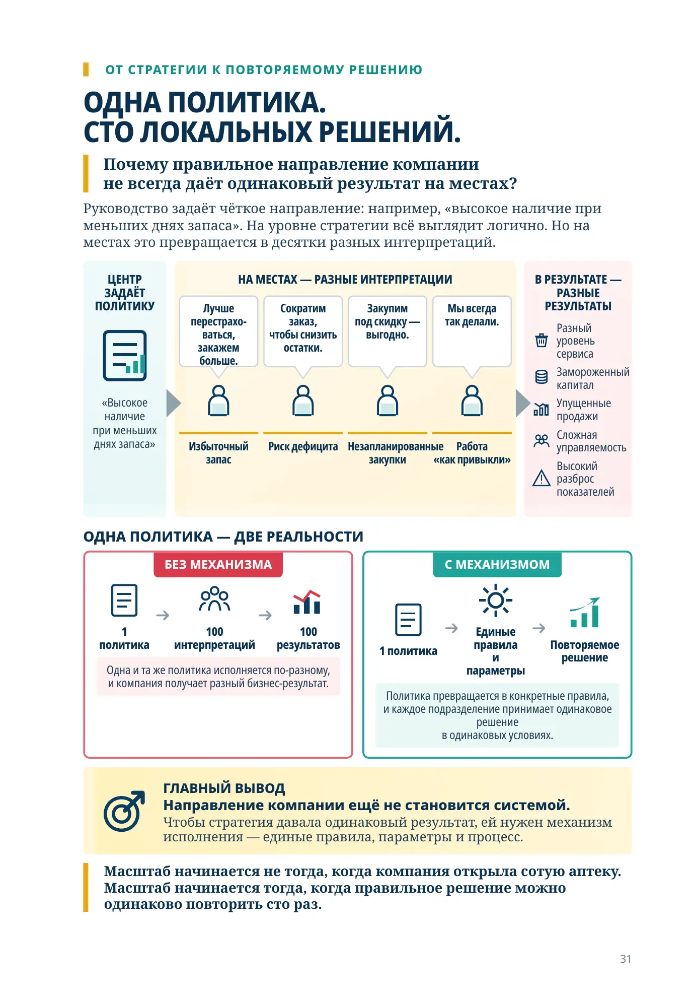
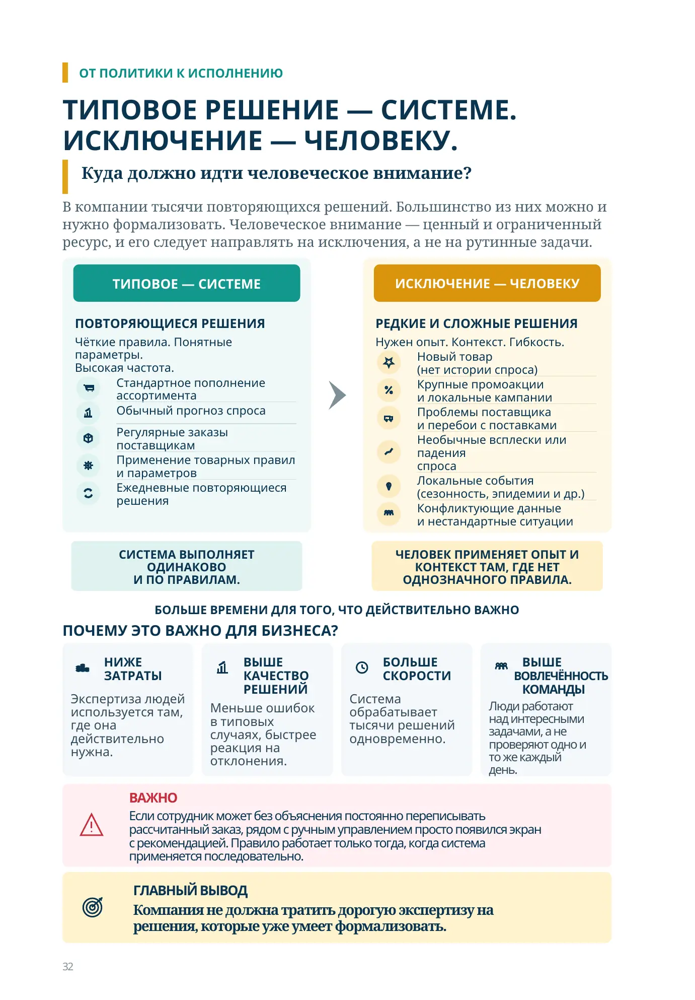
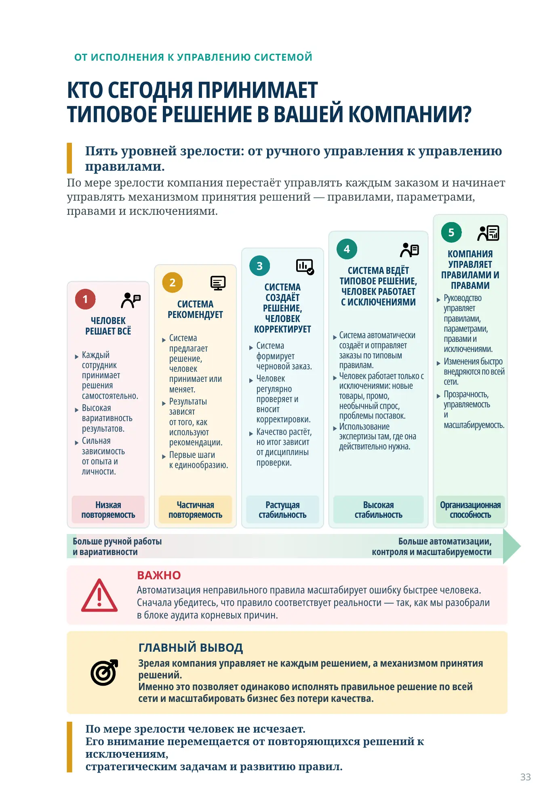
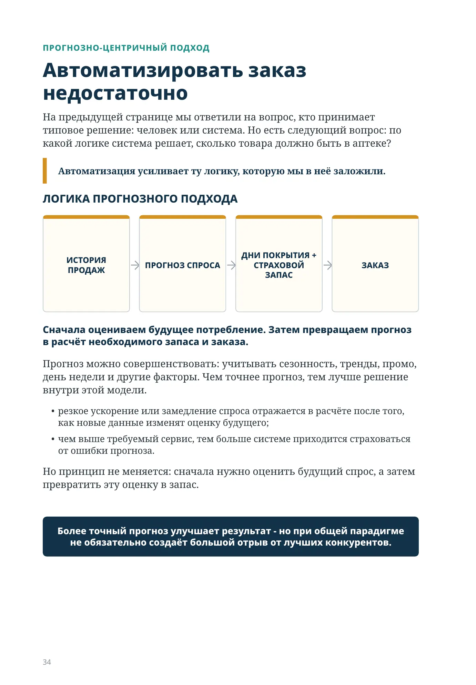
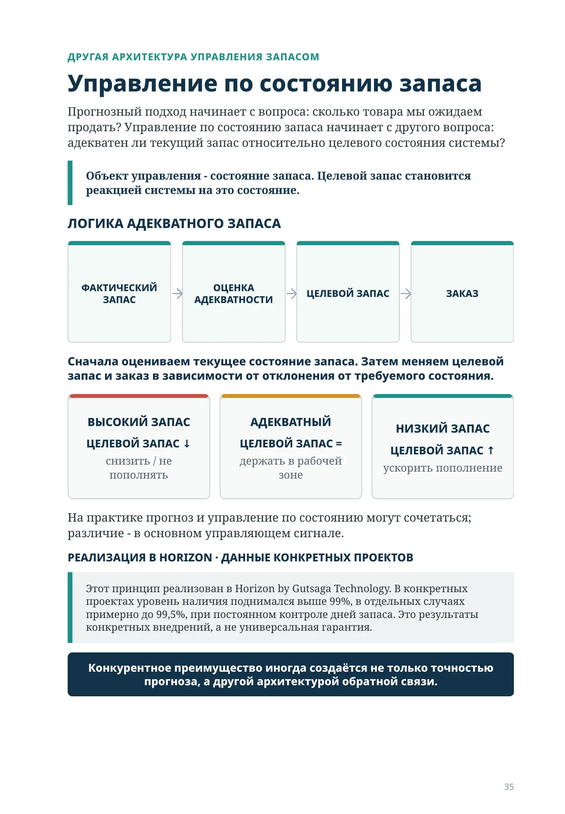
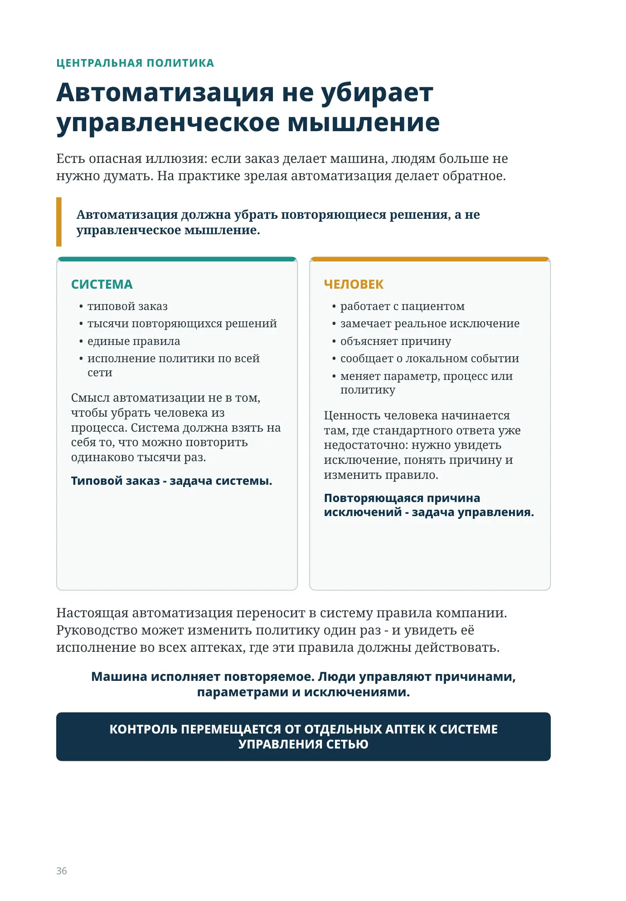
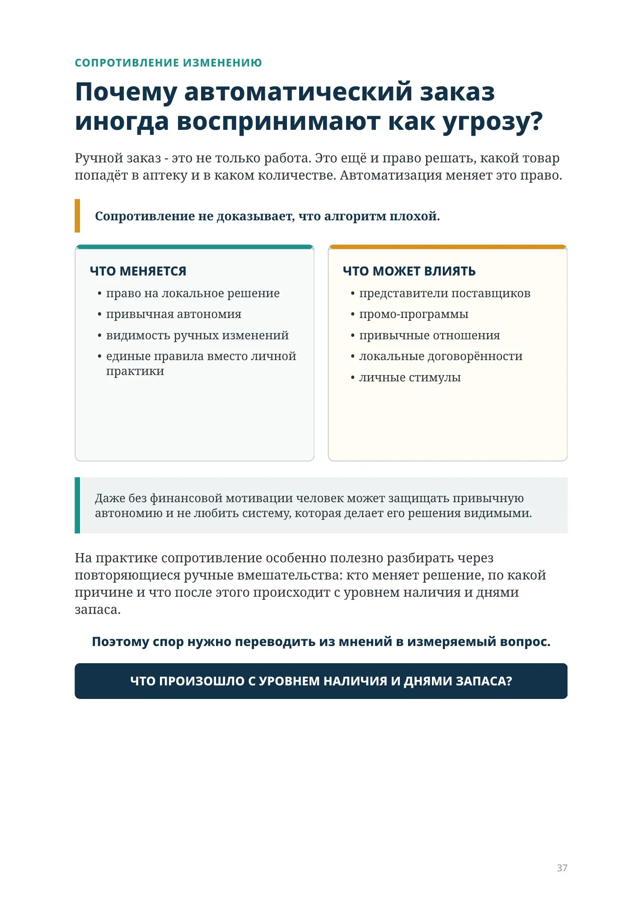
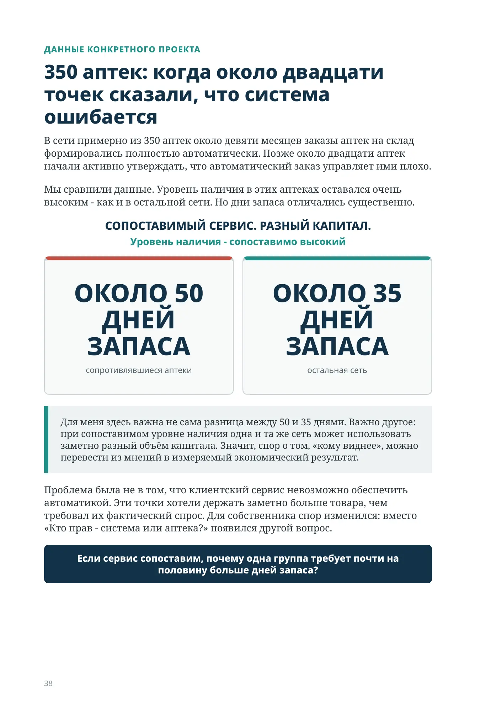
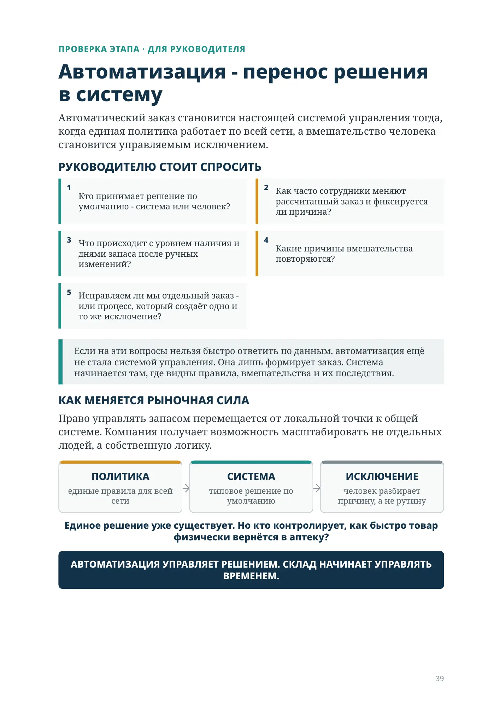
Может ли сто аптек управлять запасом одинаково?
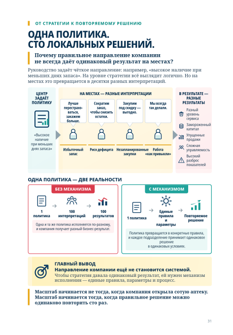
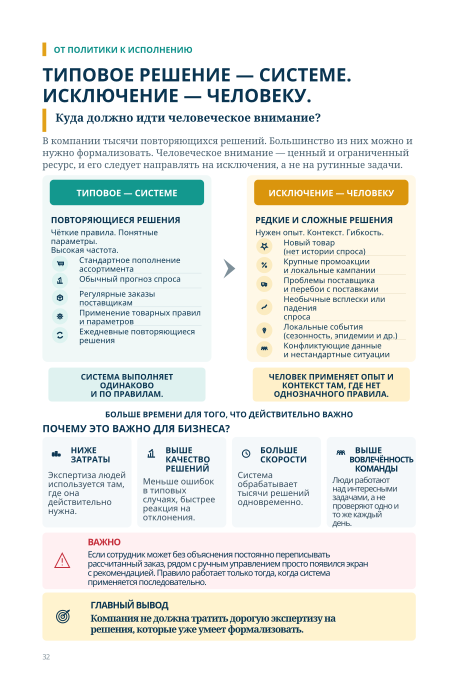
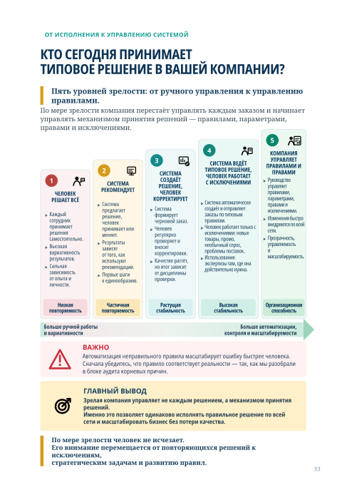
ПРОГНОЗНО-ЦЕНТРИЧНЫЙ ПОДХОД
Автоматизировать заказ недостаточно
На предыдущей странице мы ответили на вопрос, кто принимает типовое решение: человек или система. Но есть следующий вопрос: по какой логике система решает, сколько товара должно быть в аптеке?
Автоматизация усиливает ту логику, которую мы в неё заложили.
ЛОГИКА ПРОГНОЗНОГО ПОДХОДА
ИСТОРИЯ ПРОДАЖ
ПРОГНОЗ СПРОСА
ДНИ ПОКРЫТИЯ + СТРАХОВОЙ ЗАПАС
ЗАКАЗ
Сначала оцениваем будущее потребление. Затем превращаем прогноз в расчёт необходимого запаса и заказа.
Прогноз можно совершенствовать: учитывать сезонность, тренды, промо, день недели и другие факторы. Чем точнее прогноз, тем лучше решение внутри этой модели.
- резкое ускорение или замедление спроса отражается в расчёте после того, как новые данные изменят оценку будущего;
- чем выше требуемый сервис, тем больше системе приходится страховаться от ошибки прогноза.
Но принцип не меняется: сначала нужно оценить будущий спрос, а затем превратить эту оценку в запас.
Более точный прогноз улучшает результат - но при общей парадигме не обязательно создаёт большой отрыв от лучших конкурентов.
ДРУГАЯ АРХИТЕКТУРА УПРАВЛЕНИЯ ЗАПАСОМ
Управление по состоянию запаса
Прогнозный подход начинает с вопроса: сколько товара мы ожидаем продать? Управление по состоянию запаса начинает с другого вопроса: адекватен ли текущий запас относительно целевого состояния системы?
Объект управления - состояние запаса. Целевой запас становится реакцией системы на это состояние.
ЛОГИКА АДЕКВАТНОГО ЗАПАСА
ФАКТИЧЕСКИЙ ЗАПАС
ОЦЕНКА АДЕКВАТНОСТИ
ЦЕЛЕВОЙ ЗАПАС
ЗАКАЗ
Сначала оцениваем текущее состояние запаса. Затем меняем целевой запас и заказ в зависимости от отклонения от требуемого состояния.
ВЫСОКИЙ ЗАПАС
ЦЕЛЕВОЙ ЗАПАС ↓
снизить / не пополнять
АДЕКВАТНЫЙ
ЦЕЛЕВОЙ ЗАПАС =
держать в рабочей зоне
НИЗКИЙ ЗАПАС
ЦЕЛЕВОЙ ЗАПАС ↑
ускорить пополнение
На практике прогноз и управление по состоянию могут сочетаться; различие - в основном управляющем сигнале.
РЕАЛИЗАЦИЯ В HORIZON · ДАННЫЕ КОНКРЕТНЫХ ПРОЕКТОВ
Этот принцип реализован в Horizon by Gutsaga Technology. В конкретных проектах уровень наличия поднимался выше 99%, в отдельных случаях примерно до 99,5%, при постоянном контроле дней запаса. Это результаты конкретных внедрений, а не универсальная гарантия.
Конкурентное преимущество иногда создаётся не только точностью прогноза, а другой архитектурой обратной связи.
ЦЕНТРАЛЬНАЯ ПОЛИТИКА
Автоматизация не убирает управленческое мышление
Есть опасная иллюзия: если заказ делает машина, людям больше не нужно думать. На практике зрелая автоматизация делает обратное.
Автоматизация должна убрать повторяющиеся решения, а не управленческое мышление.
СИСТЕМА
- типовой заказ
- тысячи повторяющихся решений
- единые правила
- исполнение политики по всей сети
Смысл автоматизации не в том, чтобы убрать человека из процесса. Система должна взять на себя то, что можно повторить одинаково тысячи раз.
Типовой заказ - задача системы.
ЧЕЛОВЕК
- работает с пациентом
- замечает реальное исключение
- объясняет причину
- сообщает о локальном событии
- меняет параметр, процесс или политику
Ценность человека начинается там, где стандартного ответа уже недостаточно: нужно увидеть исключение, понять причину и изменить правило.
Повторяющаяся причина исключений - задача управления.
Настоящая автоматизация переносит в систему правила компании. Руководство может изменить политику один раз - и увидеть её исполнение во всех аптеках, где эти правила должны действовать.
Машина исполняет повторяемое. Люди управляют причинами, параметрами и исключениями.
КОНТРОЛЬ ПЕРЕМЕЩАЕТСЯ ОТ ОТДЕЛЬНЫХ АПТЕК К СИСТЕМЕ УПРАВЛЕНИЯ СЕТЬЮ
СОПРОТИВЛЕНИЕ ИЗМЕНЕНИЮ
Почему автоматический заказ иногда воспринимают как угрозу?
Ручной заказ - это не только работа. Это ещё и право решать, какой товар попадёт в аптеку и в каком количестве. Автоматизация меняет это право.
Сопротивление не доказывает, что алгоритм плохой.
ЧТО МЕНЯЕТСЯ
- право на локальное решение
- привычная автономия
- видимость ручных изменений
- единые правила вместо личной практики
ЧТО МОЖЕТ ВЛИЯТЬ
- представители поставщиков
- промо-программы
- привычные отношения
- локальные договорённости
- личные стимулы
Даже без финансовой мотивации человек может защищать привычную автономию и не любить систему, которая делает его решения видимыми.
На практике сопротивление особенно полезно разбирать через повторяющиеся ручные вмешательства: кто меняет решение, по какой причине и что после этого происходит с уровнем наличия и днями запаса.
Поэтому спор нужно переводить из мнений в измеряемый вопрос.
ЧТО ПРОИЗОШЛО С УРОВНЕМ НАЛИЧИЯ И ДНЯМИ ЗАПАСА?
ДАННЫЕ КОНКРЕТНОГО ПРОЕКТА
350 аптек: когда около двадцати точек сказали, что система ошибается
В сети примерно из 350 аптек около девяти месяцев заказы аптек на склад формировались полностью автоматически. Позже около двадцати аптек начали активно утверждать, что автоматический заказ управляет ими плохо.
Мы сравнили данные. Уровень наличия в этих аптеках оставался очень высоким - как и в остальной сети. Но дни запаса отличались существенно.
СОПОСТАВИМЫЙ СЕРВИС. РАЗНЫЙ КАПИТАЛ.
Уровень наличия - сопоставимо высокий
ОКОЛО 50 ДНЕЙ ЗАПАСА
сопротивлявшиеся аптеки
ОКОЛО 35 ДНЕЙ ЗАПАСА
остальная сеть
Для меня здесь важна не сама разница между 50 и 35 днями. Важно другое: при сопоставимом уровне наличия одна и та же сеть может использовать заметно разный объём капитала. Значит, спор о том, «кому виднее», можно перевести из мнений в измеряемый экономический результат.
Проблема была не в том, что клиентский сервис невозможно обеспечить автоматикой. Эти точки хотели держать заметно больше товара, чем требовал их фактический спрос. Для собственника спор изменился: вместо «Кто прав - система или аптека?» появился другой вопрос.
Если сервис сопоставим, почему одна группа требует почти на половину больше дней запаса?
ПРОВЕРКА ЭТАПА · ДЛЯ РУКОВОДИТЕЛЯ
Автоматизация - перенос решения в систему
Автоматический заказ становится настоящей системой управления тогда, когда единая политика работает по всей сети, а вмешательство человека становится управляемым исключением.
РУКОВОДИТЕЛЮ СТОИТ СПРОСИТЬ
- Кто принимает решение по умолчанию - система или человек?
- Как часто сотрудники меняют рассчитанный заказ и фиксируется ли причина?
- Что происходит с уровнем наличия и днями запаса после ручных изменений?
- Какие причины вмешательства повторяются?
- Исправляем ли мы отдельный заказ - или процесс, который создаёт одно и то же исключение?
Если на эти вопросы нельзя быстро ответить по данным, автоматизация ещё не стала системой управления. Она лишь формирует заказ. Система начинается там, где видны правила, вмешательства и их последствия.
КАК МЕНЯЕТСЯ РЫНОЧНАЯ СИЛА
Право управлять запасом перемещается от локальной точки к общей системе. Компания получает возможность масштабировать не отдельных людей, а собственную логику.
ПОЛИТИКА
единые правила для всей сети
СИСТЕМА
типовое решение по умолчанию
ИСКЛЮЧЕНИЕ
человек разбирает причину, а не рутину
Единое решение уже существует. Но кто контролирует, как быстро товар физически вернётся в аптеку?
АВТОМАТИЗАЦИЯ УПРАВЛЯЕТ РЕШЕНИЕМ. СКЛАД НАЧИНАЕТ УПРАВЛЯТЬ ВРЕМЕНЕМ.
Автоматизация решения и автоматизация движения — разные вещи
Автоматический заказ решает, что и сколько товара должно быть в точке. Роботизированное хранение решает, где физически держать этот товар и как доставить его человеку.
Если логика заказа слабая, робот не исправит запас. Он только автоматизирует физическое обращение с неправильным количеством товара.
Поэтому размер робота начинается с качества управления запасом.